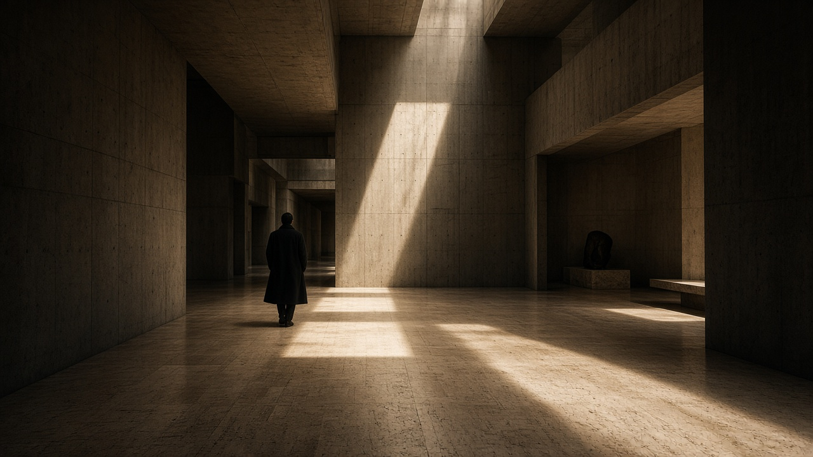

“A shaft of light is a headline. Everything else is a caption.”
Atlas Review treats the first viewport like a cover: a photograph with weight, type large enough to collide with it, a folio number, a byline, and a way through that is a sentence, not a pill.
This is not Helio. Cream paper, vermillion italic, Playfair at 128. The still is a concrete atrium, not a gradient plate.
